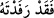

mutlaka lânetleyecektir. Dolayısıyla nereye giderlerse gitsinler, lânet peşlerini
bırakmayacaktır. Onlar Fir’avn’un buyruğu peşinde koştukları gibi lânet de yaptıklarına
tam bir karşılık olarak onların peşinden ayrılmayacaktır.
Ya da onlar dünyada boğulmak, âhirette ise uhrevî azâba dûçâr olmak suretiyle
Allah’ın rahmetinden uzak kalarak lânete uğrarlar. Çünkü yüzüstü bırakılan herkes ilâhî
tevfik ve inâyetten mahrum kaldığı gibi lânetlenen herkes de ilâhî rahmetten kovulmuş
olur.
Âyette Fir’avn’un emrine uyanların içine düştükleri bu kötü durum anlatılmakla
yetinilmiş, Fir’avn’un durumundan hiç bahsedilmemiştir. Çünkü onların durumu
böylesine kötü olursa, onları azdırıp bu derin sapıklığa sokan kişinin (Fir’avun’un)
durumu nasıl olur?! Ayrıca bu tâbilerin yaptıkları, tâbi oldukları kişiye yardımcı
olmaktan ibâret olunca, lânete uğratılmaları -sırf onların bu durumlarıyla alay etmek
için- ona ettikleri bir yardım gibi gösterilerek şöyle buyruluyor:
Onlara “verilen bu armağan / yardım ne kötü armağandır.” “__WORD__ hem yardım hem
de armağan mânâsına gelmektedir. Burada ‘yardım’ mânâsı daha uygundur: Yâni “bu
yardım ne kötü yardımdır.”
Zeccâc der ki: Bir şeyi başka bir şeye yardımcı ve destek yapınca “__WORD__ denir.
Buna göre mânâ şöyle olur: “Sağlanan bu yardım ne kötü bir yardımdır!” Bu yardım ise
iki cihanda lânetlenmektir. Şöyle ki dünyadaki lânet azâba yardımcı olur. Bu lânet,
âhiretteki lânete de yardımcı olmuş olur.
Âyette Fir’avn’un şakavetine ve boğulurken îmân etmesinin kendisine bir fayda
sağlamadığı beyan edilmektedir. Çünkü bu îmân kendisine bir fayda sağlamış olsaydı,
kavmini cehenneme götürdüğü zikredilmezdi.
(İbn Arabî’nin) el-Fütûhât’ın 62. babında şöyle geçer: “Mücrimler dört gruptur.
Hepsi de hiç çıkmamacasına cehennemliktir. Nitekim Fir’avn: “Ey ileri gelenler, sizin
için kendimden başka hiçbir ilâh tanımıyorum.” (el-Kasas, 28/38) ve “Sizin en yüce
Rabbiniz benim.” (en-Nâziât, 79/24) diyerek rablık sıfatını Allah’tan kaldırıp
kendisinin rab olduğunu iddiâ etti. Bu tür sözleri ile gökte kendisinden başka ilâh
olmadığını da kastediyordu. Nemrûd ve benzerleri de bu gruptandır.
el-Fütûhât’ın başka bir yerinde ise şöyle der: “(Fir’avn’un îmân etmediği konusunda)
benim inancım budur. Diğer söylediklerim araştırma ve inceleme maksadıyladır.”
Fusûsu’l-hikem’deki “Fir’avn’un rûhunu temiz olarak teslim ettiği” şeklindeki görüşü
yukarıda belirtilenlere göre yorumlanmalıdır. Bu bakımdan iyi düşün ve Şeyh-i Ekber’e
dil uzatma! Çünkü büyüklerin sözlerinin bir çok yorumu vardır. Kur’an’ın hayret verici
yönleri bitip tükenmez. Erbâb-ı rusûm’a/zâhir ehline göre o hâlâ bâkirdir. Allah, bizi ve
sizi, ilim ve amelin hakikatine erdirsin, bizi ve sizi kâmil insanların yoluna irşâd etsin.
Bu âyette ayrıca, hevâlarının peşinde koşanlara tâbi olmak ve fısk u fücûr ehliyle
arkadaşlık etmek de yerilmiş olmaktadır. Çünkü insanın cevheri desiseci, tabiatı
câzibeli, bir arada bulunması müessir, hastalıklar da bulaşıcıdır.